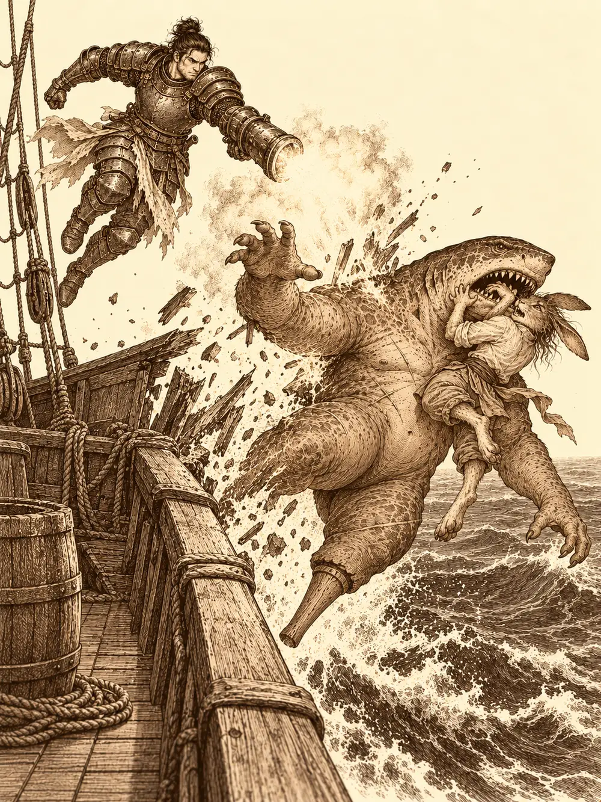

Capítulo 161
Grumete de poca monta
Libro X · Hasta pronto, Kuroto
Guxi llevaba toda la mañana en el puerto de Sho mirando el horizonte como si a fuerza de mirarlo fuera a aparecer una vela. La Flor de Loto tenía que haber vuelto de Puerto de las Espadas hacía días. En las oficinas le habían dicho que un retraso así no era para alarmarse, y los marineros del muelle solo podían asegurarle que en las costas de Kuroto no había habido tormentas; de lo que pasara mar adentro, nadie sabía nada. Banzo llegó al muelle con la cara cansada de quien lleva semanas buscando a un gnomo que no aparece. Había recorrido las tres ciudades grandes, había seguido pistas falsas por los barrios bajos y, en los calabozos de palacio, había hablado con una doncella de Lolth mientras Danifae lo escuchaba todo amordazada y con los ojos vendados. De aquella conversación solo dijo que había hecho un trato para mantener a salvo a los suyos. No explicó más.
"Serafina no debería retrasarse", dijo Guxi. "Algo ha pasado".
Ninguno de los dos sabía que la tripulación de la Flor de Loto estaba muerta y que la capitana viajaba atada al mástil de un barco pirata.
Para sacar del puerto el barco metálico del shogunato bastó la firma de Banzo. El encargado le puso delante el libro de registros y el goliat apretó el pulgar sobre la página, dejando la huella de sus tatuajes. Faltaba alguien que conociera las rutas, y alguien apareció. Junto a la puerta de la taberna del muelle esperaban un capitán con un sombrero enorme y una contramaestre de voz resuelta.
"Mi nombre es Lauret, contramaestre Lauret. Y aquí, a mi lado, está mi capitán".
"Espera, espera". El capitán se colocó bien el sombrero. "Ahora preséntame".
"Mi gran capitán. El capitán Haddock, que ha navegado por los nueve mares".
"¿No eran siete?", preguntó alguien.
"Aquí hay nueve".
Banzo no se fiaba de nadie a aquellas alturas. Agitó la bolsa de huesos y lanzó un ojo invisible por encima de los dos desconocidos para estudiarlos con calma. Vio a dos humanos de andares marineros. Le pareció que quizá exageraban la fama del capitán, nada más. Se convenció. Lauret le estrechó la mano, dijo que era un placer hacer negocios y salió de la taberna contoneando las caderas. Mientras una barca los acercaba al barco de Guxi, el gran capitán de los nueve mares se puso verde, se tapó la boca y acabó vomitando por la borda antes de que hubieran levado el ancla. Guxi le trajo unas pastillas para el mareo que sabían a rayos.
"¿Por qué se marea un capitán en un barco?".
"Es culpa del barco. Y de la barca de antes".
Guxi bajó a la sala de máquinas y Banzo lo siguió para echarle carbón a la caldera. Entre el calor y el estruendo de los pistones hablaron de Serafina, y también de Kurobane. Guxi le contó que habían entrado en la mente del muchacho para pelear contra Osuray. Lo había visto mejor después, pero no sabía dónde estaba ahora.
Arriba, Lauret marcó en la carta una ruta para salir al encuentro de cualquier barco que volviera de Puerto de las Espadas, y algo en el viento les dijo que aquel camino era bueno, aunque nada prometía que estuviera libre de piratas. Banzo la observaba manejar el timón con una soltura que no casaba con el capitán al que servía.
"Veo que aquí la que manda eres tú".
"Le dejo el título de capitán. Le hace ilusión".
"¿Y qué harías si le agarro el cuello?".
Lauret desenvainó un estoque fino con una calma que daba más miedo que un grito.
"Antes de que lo intentaras, estarías comiendo con los tiburones".
"Hay días que desayuno tiburones. Pero me ha gustado la contestación".
Entonces el capitán Haddock señaló un barco que creía muy lejos y que estaba casi pegado al costado. Llevaba una bandera negra con una calavera.
"¿Por qué nosotros no tenemos una bandera tan bonita como esa?".
La contramaestre empezó a gritar órdenes a los cañones. Banzo forzó la vista y la vio: en la cubierta del otro barco, junto al timón, había un tiburón enorme con pata de palo y el cuerpo surcado de cicatrices, y detrás de él, atada y amordazada al mástil de popa, una coneja de orejas largas. A Guxi se le inyectaron los ojos de sangre.
Fue un caos de humo, cuerdas y pólvora. Guxi desplegó sus torretas y echó a volar sobre la cubierta. Lauret inmovilizó a varios piratas con un gesto y dirigió los cañones como quien dirige una orquesta. Banzo saltó al otro barco y empezó a derribar piratas a manotazos. Mientras tanto, en el mástil, Serafina retorcía las muñecas dentro de las cuerdas, despacio, sin que nadie la mirara, hasta que consiguió sacar las manos.
El capitán Sharky esperaba cobrar un rescate por ella. No contaba con que se le echara encima. Serafina le golpeó con los puños desnudos, una y otra vez, y el tiburón abrió la boca y la atrapó entre las mandíbulas. Los dientes se le hundieron en el cuerpo y apretaron.
"¡Maldito, suéltala o no queda barco!", gritó Guxi desde el aire.
Le lanzó una bola de fuego y Sharky apretó más los dientes. Entonces el artífice hizo lo único que se le ocurrió: lo empujó con la fuerza de una torreta, dos veces, hasta sacarlo por la borda. Tiburón y coneja cayeron al mar juntos. Guxi habría dado cualquier cosa por deshacer aquel empujón, pero ya estaba hecho. En el agua, Sharky estaba en su casa, y nadaba con su presa entre los dientes.
Lauret se tiró al mar a buscar a su capitán, que había caído también en la confusión, y lo sacó a flote. Una nube de humo oscuro cubría la cubierta pirata. Lauret levantó una mano y una ráfaga de viento barrió el humo de golpe. Luego miró a Guxi, que volaba hacia el agua sin acabar de llegar a ninguna parte.
"¡Maldita sea! ¿No sois capaces de solucionar nada sin ayuda?".
Y mientras lo regañaba lo curó. Cuando salió del agua, chorreando, ya no era la contramaestre. Era Calista. Por eso nadaba tan bien. Por eso había rescatado a su capitán, que tampoco era quien decía: Haddock era Gelbreak, y el gran capitán de los nueve mares se sacudía el agua con cara de no haber vomitado nunca en su vida.
Sharky lanzó un grito que se oyó bajo el agua, y empezaron a llegar tiburones atraídos por la sangre. Gelbreak los fue destrozando uno tras otro con magia para mantenerlos lejos de la shogun, mientras Banzo seguía solo contra casi toda la tripulación pirata en la otra cubierta. Serafina, atrapada en la boca del capitán, se bebió una poción para respirar bajo el agua, se curó como pudo y siguió golpeando desde dentro de las mandíbulas. Guxi quería acercarse a Sharky y no podía. Cada vez que lo intentaba, un miedo antiguo le apretaba el pecho y lo frenaba en el aire. Así que disparó desde donde estaba, una vez y otra.
Banzo terminó de aplastar a la mayoría de los piratas y descargó sus espíritus en una explosión que lo dejó vacío durante un rato. Los que quedaban en pie lo miraron y bajaron las armas, acobardados, aunque ninguno se pasó a su bando. Calista intentó amedrentar a un tiburón, que la ignoró, y entonces se transformó en dragón. Gelbreak subió a la cubierta pirata, miró los muertos y pensó en voz alta que para qué lo habían hecho subir si apenas quedaba nadie. Levantó la mano y unas formas negras brotaron alrededor de los últimos piratas y los marchitaron.
"No me voy a rendir", gritaba Serafina dentro de la boca del tiburón. "¡Suéltame, perro!".

Lo golpeó con todo lo que tenía, buscando los puntos donde el cuerpo se desconecta, una y otra vez, y Sharky aguantó una y otra vez, hasta que no aguantó. Se quedó aturdido. Las mandíbulas se abrieron. Calista dio una orden y todos atacaron a la vez. Guxi siguió disparando hasta que el capitán dejó de moverse y se quedó flotando boca arriba, con la cabeza destrozada.
Calista registró el cadáver y sacó una pistola. Tenía grabadas en el cañón unas letras que ninguno esperaba: GXI Prototype. Era un arma mejorada que golpeaba con pura fuerza, capaz de hacer que una torreta disparara junto a ella durante un rato y de lanzar una descarga explosiva que apartaba todo lo que alcanzaba. Nadie supo cómo había llegado a manos de un pirata. Calista se la entregó a Guxi sin una palabra.
Serafina nadó hasta el cadáver. Del cuello del tiburón colgaba un collar que no era suyo: había pertenecido al antiguo capitán del Rompeolas. Se lo arrancó y se lo ató a la muñeca. Luego tomó a Guxi de la mano y subió con él a bordo, y solo arriba se quitó por fin la mordaza. Le entraron ganas de llorar. Había visto morir a los grumetes, había visto la cubierta de la Flor de Loto llena de cuerpos y había vuelto a ver a Sharky. Un frío le recorría el cuerpo entero. Sin mirar a nadie, cruzó la cubierta hasta el timón, donde estaba Banzo, y puso las manos sobre la madera. Le temblaban.
"De nuevo estás en mis manos, querido Rompeolas. Te juro que esta vez no te voy a soltar".
"¿Este barco es tuyo?".
"Así es. Este es mi querido Rompeolas".
"Pues toma tu puesto, capitana". Banzo le dio una palmada en el hombro y se apartó.
Calista y Gelbreak reconocieron lo que habían hecho: querían una pequeña escapada y, de paso, echar una mano en el rescate. Calista se acercó al goliat y le susurró que se había enterado de la expedición al volver a palacio. Gelbreak tocó con el pie un cadáver y declamó que era el mejor capitán de los nueve mares.
Mientras Guxi y Serafina se besaban en medio de la cubierta, delante de todo el mundo, los demás repasaron los cuerpos. Unas piernas asomaban por debajo de una ballesta volcada. Gelbreak les dio dos toques con el estoque.
"¡No me matéis, por favor! ¡No he matado a nadie!".
Banzo se agachó a mirarlo.
"Te has escondido muy bien. Te voy a presentar a un amigo que te enseñará a esconderte mejor y te conseguiré un trabajo. A partir de ahora trabajas para mí". Agarró el cadáver de uno de sus compañeros y lo tiró al mar. "O si no".
"Me llamo Maximiliano".
"Toby".
Calista le dijo que podía quedárselo si quería, pero que lo pusiera a recoger los cadáveres, porque ella no pensaba viajar con muertos en cubierta, y que dejara de tirar basura al mar. Serafina, entre beso y beso, le confesó a Guxi que Sharky había sido su pareja. Gelbreak volvió al barco metálico sin quitarse el sombrero de capitán, y los dos barcos pusieron rumbo a Kuroto.
Guxi llegó primero y esperó en el muelle, sentado en un barril, con el corazón en un puño. Cuando todos hubieron bajado del Rompeolas, Serafina se quedó a bordo. Acarició la madera del timón y luego el mástil, con lágrimas que le corrían por las mejillas.
"He vuelto a casa, capitán Dimer".
La madera crujió a su espalda. Guxi subía por la pasarela.
"Bienvenido a mi madriguera. Aquí crecí y aquí supe cuál era mi destino, o al menos así lo decidió el antiguo capitán".
"Bienvenida a casa", le dijo él.
Fue suficiente. Serafina corrió a abrazarlo y se deshizo en llanto. Todos habían muerto, le dijo. Eran muy jóvenes y no había podido hacer nada, y no sabía qué les iba a decir a sus familias. Guxi le levantó la cara para que lo mirara y le dijo que no se culpara por haberse esforzado. Ella lo tomó de la mano y lo llevó a la borda, donde el sol se ponía sobre el agua, y gritó uno por uno los nombres de los marineros, y el del capitán Spock, y les deseó que encontraran la paz.
"¡Hasta que nos volvamos a ver, marineros!".
Después se volvió hacia él, se arrodilló y le mostró los anillos que él le había regalado. Le pidió que navegaran juntos hasta el final, por mares en calma y tempestades. Guxi aceptó con la voz rota. Ella le puso un anillo y le dio el otro, y entonces él también se arrodilló y le prometió afrontar con ella sus proyectos y los miedos del pasado. Serafina lo besó y Guxi volvió a ponerle el anillo en el dedo. Abajo, en el agua, todavía flotaba algo de la sangre de aquel día.
En el despacho de palacio, Calista terminaba de poner en regla los papeles del Rompeolas cuando llegó Banzo con malas noticias. Los cangrejos de la celda estaban muertos, y Yiccardaria mantenía a Danifae conectada con el exterior. Propuso dos salidas: liberarla para que cometiera un error o ejecutarla de una vez. Calista no tuvo que pensarlo. No iba a permitir que aquella drow paseara libre por sus calles. La mataría.
Gelbreak preguntó qué trato había hecho el goliat. Banzo solo dijo que había una tarea que los mantenía atados y pidió confianza; los detalles eran peligrosos. Calista le recordó que nada garantizaba que la otra parte cumpliera. Él admitió que dependía del capricho de una diosa, pero que sus amigos seguían siendo sus amigos y que la última palabra era de la shogun. Gelbreak acabó diciendo que confiaba en él. Los tres bajaron a los calabozos.
Danifae estaba atada, amordazada y con los ojos vendados, pero levantó la cabeza al oírlos y sonrió. Calista desenvainó el estoque. La mujer de pelo blanco se formó despacio junto a la celda.
"Yo que tú no haría eso, tritón. Puede ser un problema".
Señaló a Banzo. El goliat estaba paralizado, y bajo su piel corrían filamentos blanquecinos, finos como hilos de telaraña, por los brazos, el cuello, la cara. Matar a Danifae, explicó Yiccardaria, lo mataría a él también. Chasqueó los dedos y la misma red apareció bajo la piel de la prisionera. Lolth siempre cumplía sus tratos.
Calista apretó la mandíbula. Le quitó las ataduras a Danifae una por una y dejó la mordaza para el final, sin apartar los ojos de ella. Cuando por fin se la retiró, le clavó el estoque en el estómago.
La drow se dobló con una mueca de dolor que se convirtió en sonrisa. A la espalda de Calista, Banzo gritó: le brotaba sangre del vientre, en el mismo sitio.
"Ah, sí, se me olvidaba", dijo Yiccardaria. "Lo que sufra uno lo sufrirá el otro, hasta que se cumpla el trato".
Calista sacó el arma y saltó hacia atrás, con las aletas vibrando de rabia. Gelbreak la agarró del brazo, le arrancó el estoque de la mano y la miró como nunca la había mirado.
"¡Basta!".
Puso una mano sobre la herida del goliat y empezó a cerrarla. Le dijo que, ya que el trato era suyo, Danifae era responsabilidad suya. Luego un destello blanco se llevó a la shogun y al drow de allí.
Banzo se apretó la herida y se dio media vuelta.
"Vámonos. Tienes que lavarte y comer".
Danifae se levantó para seguirlo. Al pasar junto a Yiccardaria le sostuvo la mirada hasta que la criatura enseñó los dientes y se deshizo en su forma verdadera, y desapareció de aquel plano. En la celda vacía quedaron las cadenas y los caparazones de los cangrejos.